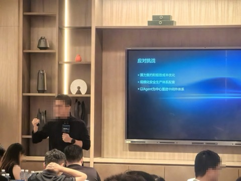

李春介绍自身从业经历后，阐述了 Infa 在 AI 时代面临的挑战，包括计算模式转变、基建约束、成本压力和监管压力等内容如下：
音频主要探讨了使用 AI 后企业面临的诸多问题及应对策略，内容如下：
蚂蚁的分享是对上午乐观叙事最有力的「刹车」。在金融与超大规模场景下，余锋把真实约束摆上桌：计算模式反转、国产化适配、电力、合规、灰度上线——「写代码只占 20–30%，剩下 70% 是大规模上线」。这是把「agent 革命」从 demo 拉回生产的关键一课。
